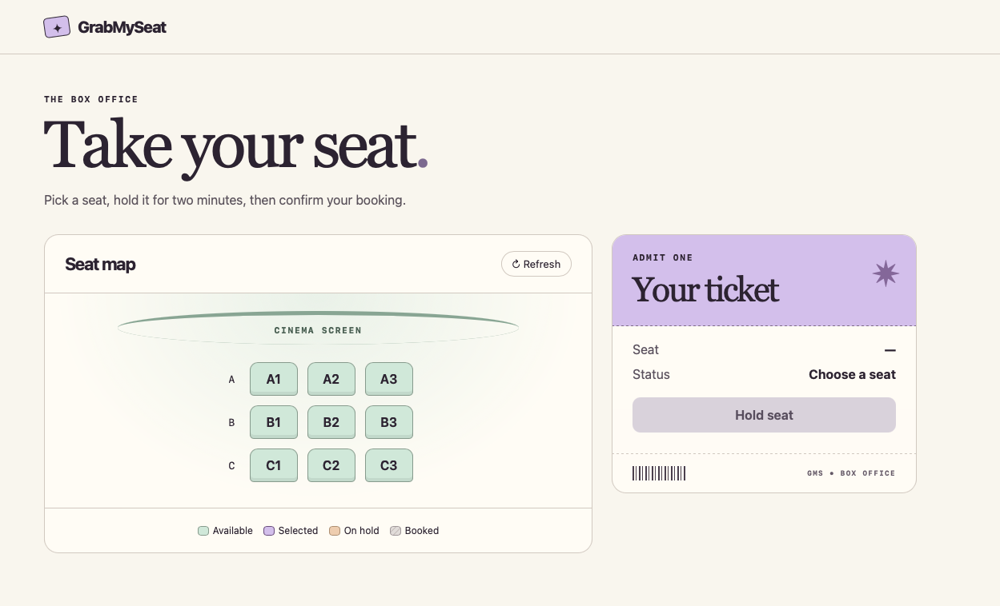

GrabMySeat
A cinema seat booking demo. Pick a seat, hold it for two minutes, and confirm the booking. Expired holds release the seat automatically.
My contribution: I built the Java and Spring Boot backend, including the booking API, timed holds, and expiry cleanup. I used optimistic locking to handle concurrent requests for the same seat.
Frontend: AI-designed pastel interface built with HTML, CSS, and vanilla JavaScript.